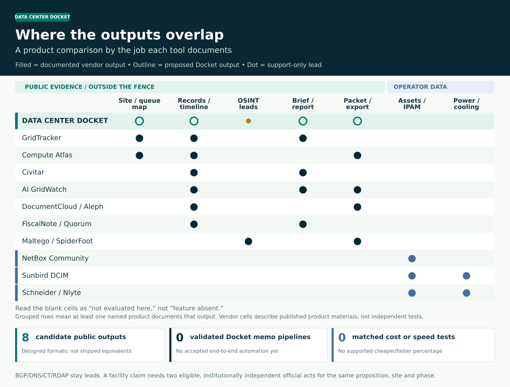

What did the town approve, and what comes next?
Original tax, permit and power acts → reviewed case → source-linked brief. BGP, RIPE and DNS can find a lead, not confirm a facility.
A town hears about a proposed data center. The permit, power filing and tax deal sit in different places, sometimes under different names. Data Center Docket is being built to connect the original records to one site and phase, show what they establish and where they conflict, then draft a brief a council staffer, worker group or reporter can check.
Existing tools already map sites, track policy and write reports. The question here is whether a shared, reviewed public case helps people make a better decision at a lower total cost. That has to be tested.
Public network data can suggest a lead. Packet contents and live equipment readings require authorized access.
This matrix tests a public-record brief. The Console is a coequal intended product for a separately authorized service question, not an extension of public OSINT.
Original tax, permit and power acts → reviewed case → source-linked brief. BGP, RIPE and DNS can find a lead, not confirm a facility.
Separately permitted task, flow and incident events → scoped test → operator, worker or risk decision. No access or integration is assumed.
No live official-record-to-interface detector, deployed Console or integrated product has been established. Private telemetry never supplies an independent public agency act.
An outlined ring marks a proposed Docket output. A filled dot marks an output documented by another product. Empty cells were not evaluated. Internal assets and live facility readings require operator access.

The same public evidence could support a site map, a hearing timeline, a worker brief or a procurement question. These are eight formats to pilot, not eight finished products. Original agency records may be free to read; reuse rights, upkeep, computing and human review still have costs. Some existing tools already offer free versions.
Where is it, and what is proposed?
Existing examples: Compute Atlas · datacenter.fyi · Civitar
Public material: Public parcel, permit and source links
Proposed Docket formatWhich decision came first?
Existing examples: GridTracker · Civitar · agency portals
Public material: Dated IDA, DEC, municipal and power acts
Proposed Docket formatWhat changed since the last check?
Existing examples: GridTracker · Cleanview · Civitar
Public material: Versioned public notices and reviewer queue
Proposed Docket formatWhat supports or challenges this claim?
Existing examples: DocumentCloud · Aleph · public trackers
Public material: Original documents, page/field locator, origin and dispute
Proposed Docket formatWhat can a council member act on?
Existing examples: FiscalNote · Quorum
Public material: Reviewed case + audience question + human sign-off
Proposed Docket formatWhat is promised to local workers?
Existing examples: Civitar · FracTracker · AI GridWatch
Public material: Public benefits, jobs, conditions and unknowns
Proposed Docket formatWhat can a public buyer require?
Existing examples: Public procurement records · agency clause libraries
Public material: Public clause and disclosed obligation only
Proposed format · public obligations onlyCan another team check the finding?
Existing examples: Compute Atlas · GridTracker · DocumentCloud
Public material: Rights-reviewed source and provenance fields
Proposed Docket formatWhere a saving might come from: for one narrowly scoped public question, start with the original records before buying a national data feed. Compare the complete cost with manual portal work, free tools and paid products. No saving is established yet.
A market forecast, a permit brief and a live rack alarm answer different questions. This chart keeps each tool next to the data it needs, the proposed Docket role and the proof still missing.
| Job | Strong existing tools | Where Docket would fit | What we would test |
|---|---|---|---|
| National market inventory and forecast | GridTracker, DC Byte, datacenterHawk, Cleanview | Use these for market coverage. Docket would examine a bounded public case in New York. | Coverage denominators and licensed-source rights. |
| Facility map and public-site brief | Compute Atlas, datacenter.fyi, Civitar, FracTracker | Start with their map. Docket would check the original acts for the same site and phase and show conflicts. | Same sites and cutoff; missing records, false joins and citation quality. |
| Public OSINT clues and entity graph | RIPE/RouteViews, Aleph, SpiderFoot, Maltego | Use these as leads. BGP, DNS, CT, RDAP and peering can point to a next check; they cannot confirm a facility. | Source-lineage and rights review; no person profiling or unauthorized scans. |
| Operator asset inventory / IPAM | NetBox, Device42, Oomnitza, Sunbird dcTrack | Use these inside the facility. A proposed Console export would require operator permission, access controls and a defined task. | Authorized inventory export and strict plane isolation. |
| Live power, cooling, incident and rack reports | Sunbird Power IQ, Schneider, Nlyte, Vertiv, Hyperview, openDCIM | Use these for live operations. Public permits and network clues do not reveal rack power or cooling. A Console study would require authorized equipment evidence and a defined incident question. | Consented equipment data, recovery test, access and retention controls. |
| Document search and annotation | DocumentCloud, Aleph, Foundry | Use these to work with documents. Docket could receive a source packet and apply its facility claim rule. | Exact locators, versions, original bytes and reviewer action. |
| Policy briefs, automated reports and document templates | FiscalNote, Quorum, Foundry, Civitar | Brief writing already exists. Docket would be tested on original acts, contrary records and briefs that answer each audience’s question. | Used memo, correction replay, human review and comparison with existing brief. |
| Two independent official acts for facility claim | Public trackers and workbenches may be configurable; publicly documented behavior varies | Proposed claim rule. Require two independent official acts for the same site, phase and claim; show why a finding is withheld. | Held-out duplicate-origin and negative-case tests in a live case path. |
Compare one reviewed output for the same site and source cutoff. A free portal, a free tracker and a paid policy tool may each be the best current route. Civitar already offers free full Site Briefings, a change timeline and site comparisons; NetBox and openDCIM publish open-source code. Live DCIM monitoring has a different input and purpose, so its price is not a valid memo benchmark.
Use actual staff time and permitted prices. Match the site, source cutoff, quality bar and reviewer. Leave fields blank until you have evidence.
Total monthly comparison = license / access + (reviewed cases × analyst minutes ÷ 60 × hourly cost) + hosting / model / maintenance + rights and QA.
The worksheet omits one-time setup and error/correction cost; include those in a purchasing decision. A lower number does not mean equal coverage or quality.
What counts as faster: start the clock when the original record appears and stop when a reviewer accepts the brief. Count missed acts, false site matches, bad citations, duplicate institutional sources and time spent fixing errors. Draft speed alone is not delivery speed.
Search the 33 products reviewed here. Each link goes to the provider’s description of its own output. The summaries do not measure accuracy or rule out capabilities a configurable product may have.
This index is preserved for coverage. It does not assert current feature or pricing verification for every named item. The detailed cards above are the current primary-source sample; the issue pitches explain audience-specific applications.